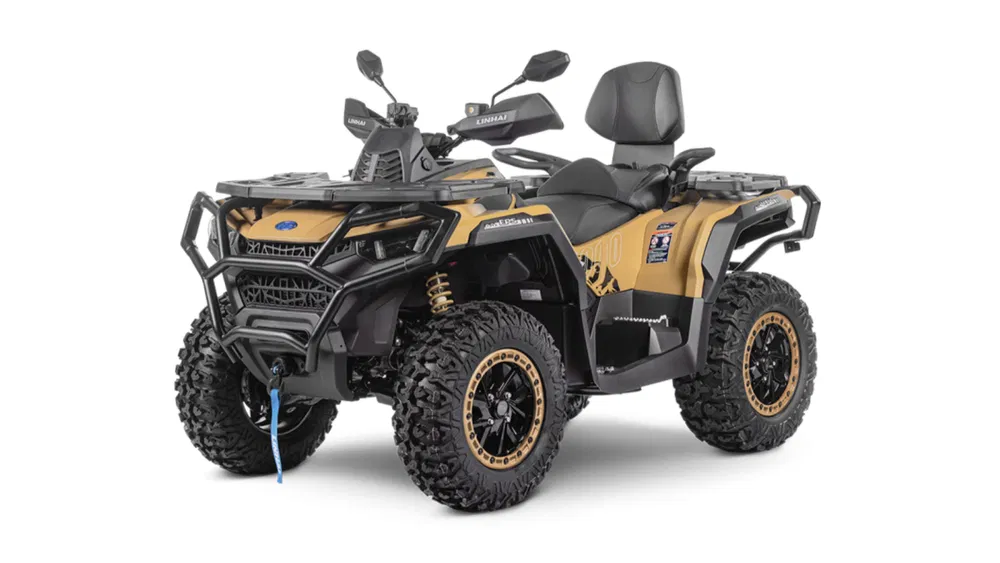

.jpeg)
BINE AȚI VENIT LA ATV-ARAD
Ce este ATV-ARAD?
ATV-ARAD este un magazin dedicat pasionaților de ATV-uri și aventură off-road, situat în Arad. Ne ocupăm cu vânzarea de ATV-uri pentru toate categoriile de utilizatori, de la începători până la cei cu experiență, oferind produse moderne, fiabile și pregătite pentru orice tip de teren. Misiunea noastră este să oferim clienților combinația perfectă între performanță, siguranță și distracție.
De ce ATV-ARAD?
La ATV-ARAD, punem pe primul loc calitatea, seriozitatea și satisfacția clienților noștri. Oferim ATV-uri atent selecționate, consultanță profesională și suport dedicat pentru a te ajuta să alegi modelul potrivit nevoilor tale. Ne diferențiem prin pasiunea pentru off-road, atenția la detalii și dorința de a oferi fiecărui client o experiență sigură, plăcută și de încredere.
Despre noi:
Suntem o firmă situată în Arad care se ocupă cu comercializarea ATV-urilor. Noi dorim să împărțim fericirea care le aduc aceste mașinări nouă cu restul lumii și sperăm ca vizita voastră la locația noastră să fie una plăcută.
Puteți veni să vedeți gama noastră de ATV-uri în timpul programului :
Luni-Vineri : 9:00-17:00
Sambata-Duminica : Inchis
Polaris Scrambler 1000/850
Polaris Scrambler este un ATV sport-performance construit pentru viteză, stabilitate și condus agresiv pe teren accidentat. Combină puterea unui motor mare cu un șasiu lat și suspensii performante, fiind orientat spre trail riding rapid și performanță off-road.
MOTOR PROSTAR TWIN DE 952 CM³ / 850 CM³ :
Modelele Scrambler folosesc motoare ProStar Twin puternice, capabile să ofere accelerație rapidă și cuplu mare pe orice tip de teren. Varianta de 1000cc dezvoltă aproximativ 89 CP și oferă răspuns instantaneu la accelerație. ATV-ul păstrează puterea constantă pe nisip, noroi, zăpadă și trasee forestiere.
ȘASIU LAT ȘI STABILITATE RIDICATĂ :
Varianta Scrambler XP 1000 S utilizează un șasiu extra-wide, construit pentru stabilitate la viteze mari și control bun în viraje rapide. Poziția joasă și ampatamentul lat oferă mai multă siguranță pe teren accidentat.
SUSPENSIE WALKER EVANS PERFORMANCE :
Suspensia premium Walker Evans oferă cursă lungă și absorbție excelentă a șocurilor. ATV-ul poate trece peste pietre, rădăcini și denivelări fără să piardă stabilitatea, fiind construit pentru trail riding rapid și teren dificil.
DESIGN SPORT AGRESIV :
Scrambler are un design inspirat din racing, cu carene agresive, poziție joasă și aripi late. Aspectul ATV-ului transmite performanță și viteză.
SISTEM AWD ON-DEMAND :
Sistemul Polaris AWD activează automat tracțiunea integrală atunci când terenul devine dificil. ATV-ul păstrează aderență bună pe noroi, zăpadă și urcări abrupte.
SERVODIRECȚIE ELECTRONICĂ EPS :
Servodirecția electronică reduce efortul în viraje și oferă control mai precis pe trasee tehnice și la viteze mari.
MODURI DE UTILIZARE :
► TRAIL RIDING - Ideal pentru trasee forestiere rapide și teren accidentat.
► SAND RIDING - Puterea mare și suspensia lungă îl fac eficient pe nisip și dune.
► SNOW RIDING - Tracțiunea AWD și garda mare la sol ajută în condiții de iarnă.
► SPORT RIDING - Construit pentru accelerații puternice, drifturi și condus agresiv.
GARDA MARE LA SOL :
Scrambler oferă gardă mare la sol pentru depășirea obstacolelor fără probleme. Acest lucru îl ajută pe trasee dificile și în zone cu noroi adânc.
E FULL LED :
Farurile LED oferă vizibilitate bună pe timp de noapte și completează designul modern și agresiv al ATV-ului.
LOPE PERFORMANCE :
Anvelopele late și jantele mari oferă aderență ridicată și stabilitate la viteze mari. Configurația este construită pentru control și performanță pe teren mixt.
VARIANTA 850 VS 1000 :
► Scrambler 850 oferă o experiență mai ușor de controlat și mai liniară.
► Scrambler 1000 oferă accelerație mult mai agresivă, viteză mai mare și un comportament mai extrem în condus sportiv.
Can-Am Outlander 1000 / 850

CM³ :
Echipat cu motoare Rotax V-Twin puternice, modelele Outlander 1000 și 850 dezvoltă până la 91 CP, oferind accelerație rapidă și un cuplu impresionant pentru muncă grea și trasee dificile. Sistemul EFI optimizează consumul și asigură o livrare constantă a puterii în orice condiții de rulare.
ȘASIU ȘI SUSPENSIE :
Șasiul robust și suspensia independentă TTI2 oferă stabilitate excelentă și absorb eficient denivelările terenului. Poziția ergonomică la ghidon și șaua confortabilă permit utilizarea ATV-ului pe perioade lungi fără oboseală excesivă.
PREGĂTIT PENTRU MUNCĂ ȘI AVENTURĂ :
Outlander poate fi echipat rapid cu accesorii dedicate precum lame de zăpadă, remorci, pulverizatoare sau cutii de depozitare. Capacitatea mare de tractare și portbagajele solide îl transformă într-un partener ideal pentru agricultură, ferme sau activități outdoor.
SERVODIRECȚIE DINAMICĂ TRI-MODE DPS :
Sistemul Dynamic Power Steering ajustează automat nivelul de asistență în funcție de viteză și teren. Direcția rămâne ușoară la manevre lente și precisă la viteze ridicate, contribuind la control și siguranță sporită.
MODURI DE RULARE INTELIGENTE :
► WORK - Livrează tracțiune și control optim pentru sarcini grele și tractare.► NORMAL - Configurație echilibrată pentru deplasări zilnice și teren mixt.
► SPORT - Deblochează răspuns instantaneu al accelerației și performanță maximă pentru condus agresiv off-road.
SUSPENSIE PERFORMANTĂ :
Amortizoarele premium și geometria suspensiei sunt concepute pentru stabilitate și confort pe teren accidentat. Garda la sol ridicată permite depășirea obstacolelor fără compromisuri.
ILUMINARE FULL-LED MODERNĂ :
Sistemul complet LED oferă vizibilitate excelentă pe timp de noapte și în condiții dificile. Designul frontal agresiv completează aspectul premium al vehiculului.
PORTBAGAJE REZISTENTE :
Suporturile față și spate permit transportul eficient al echipamentelor și bagajelor. Sistemele rapide de fixare facilitează montarea accesoriilor și a cutiilor cargo.CFMOTO CFORCE 1000 / 850
CFMOTO CForce este un ATV utility-performance construit pentru confort, putere și utilizare mixtă pe teren accidentat și activități utilitare. Modelele de 1000cc și 850cc combină tehnologia modernă, suspensia independentă și un nivel ridicat de echipare din fabrică, fiind potrivite pentru touring, trail riding și muncă.
MOTOR V-TWIN DE 963 CM³ / 800+ CM³ :
Modelele CForce folosesc motoare V-Twin performante, capabile să ofere accelerație liniară și cuplu ridicat. Varianta de 1000 dezvoltă aproximativ 75 CP, oferind performanță bună pentru trasee dificile, tractare și teren accidentat.
ȘASIU ROBUST ȘI CONFORT RIDICAT :
CForce utilizează un șasiu rezistent și suspensie independentă, oferind stabilitate bună și confort ridicat pe distanțe lungi. ATV-ul rămâne stabil pe trasee forestiere, drumuri accidentate și teren mixt.
SUSPENSIE INDEPENDENTĂ PERFORMANCE :
Suspensia față și spate absoarbe eficient șocurile și denivelările, oferind control bun pe pietre, noroi și trasee dificile. Garda mare la sol permite trecerea peste obstacole fără probleme.
DESIGN MODERN ȘI AGRESIV :
CForce are un design modern, cu carene agresive, faruri Full LED și dimensiuni robuste. Aspectul ATV-ului combină stilul premium cu partea practică utilitară.
SISTEM 4X4 SELECTABIL :
Sistemul de tracțiune permite schimbarea rapidă între 2x4 și 4x4, oferind aderență bună pe noroi, zăpadă și teren dificil.
SERVODIRECȚIE ELECTRONICĂ EPS :
Servodirecția electronică reduce efortul în viraje și oferă control mai bun pe trasee tehnice și teren accidentat.
DOTĂRI PREMIUM DIN FABRICĂ :
► Troliu electric inclus.
► Faruri Full LED moderne.
► Ecran digital multifuncțional.
► Portbagaje solide pentru bagaje și echipamente.
► Mânere și șa încălzite pe anumite versiuni.
MODURI DE UTILIZARE :
► TRAIL RIDING - Ideal pentru trasee forestiere și teren mixt.
► TOURING - Confort ridicat pentru deplasări lungi.
► WORK USE - Potrivit pentru tractare și activități utilitare.
► SNOW RIDING - Tracțiunea 4x4 și garda mare la sol ajută în condiții de iarnă.
CAPACITATE DE TRACTARE :
CForce oferă capacitate bună de tractare și transport, fiind potrivit pentru remorci, echipamente agricole și activități outdoor.
ILUMINARE FULL LED :
Sistemul modern LED oferă vizibilitate excelentă pe timp de noapte și completează designul premium al ATV-ului.
VARIANTA 850 VS 1000 :
► CForce 850 oferă putere suficientă și control mai liniar.
► CForce 1000 oferă accelerație mai puternică, cuplu mai mare și performanță mai bună pentru teren dificil și tractare.
Linhai Landforce 1000 / 850

MOTOR DE 976 CM³ :
Propulsat de un motor EFI de 976 cm³, acest model generează 93 CP și un cuplu optimizat pentru solicitări intense. Răspunsul imediat al accelerației și livrarea constantă a puterii garantează eficiență maximă în regim de lucru și un comportament excelent pe traseele off-road.
CONFORT ȘI STABILITATE :
Poziția la ghidon a fost proiectată pentru a asigura un nivel ridicat de confort pe parcursul întregii zile. Geometria suspensiei și garda la sol superioară lucrează împreună pentru a estompa denivelările terenului, oferind un comportament predictibil și relaxant în cele mai solicitante condiții de off-road.
PREGĂTIT PENTRU ORICE SARCINĂ DE LUCRU :
Landforce 1000 EPS se transformă ușor dintr-un vehicul de off-road într-un utilaj de lucru prin atașarea accesoriilor dedicate (remorci, lame de zăpadă, cositori, etc). Șasiul și motorizarea sunt construite pentru a rezista rigorilor zilnice din câmp sau de la ferma, garantând productivitate maximă indiferent de anotimp.
SERVODIRECȚIE ELECTRONICĂ REGLABILĂ (EPS) :
Sistemul EPS cu trei trepte de reglaj (MIN-MID-MAX) adaptează automat forța de virare la condițiile de drum. Facilitează manevrarea pe spații înguste și rigidizează direcția la viteze superioare, oferind pilotului un control optim și o stabilitate constantă pe teren accidentat.
MODURI DE RULARE SELECTABILE :
► WORK - Prioritizează forța de tracțiune. Proiectat pentru regim de lucru intens în agricultură, silvicultură și tractarea de greutăți.► NORMAL - Regim de rulare economic și echilibrat. Potrivit pentru utilizarea de zi cu zi, transport ușor și traversarea terenurilor fără dificultate tehnică majoră.
► SPORT - Ajustează harta motorului pentru a oferi un răspuns instantaneu al accelerației și o livrare rapidă a puterii, ideal pentru deplasări în ritm alert pe trasee off-road sau suprafețe compacte.
SUSPENSIE COMPLET REGLABILĂ :
Amortizoarele cu rezervoare de expansiune separate permit reglarea independentă a compresiei și a rebound-ului. Șasiul poate fi ajustat cu precizie în funcție de sarcină, stilul de condus și teren, contribuind la o stabilitate, aderență și control sporite atât în utilizarea profesională, cât și în condusul dinamic.SISTEM DE ILUMINARE FULL-LED :
Farurile Full LED asigură un fascicul luminos uniform și clar, garantând vizibilitate optimă pe timp de noapte sau în condiții meteo nefavorabile. Luminile de zi (DRL) integrate sporesc gradul de vizibilitate a vehiculului pe traseu, subliniind totodată arhitectura frontală modernă a acestuia.